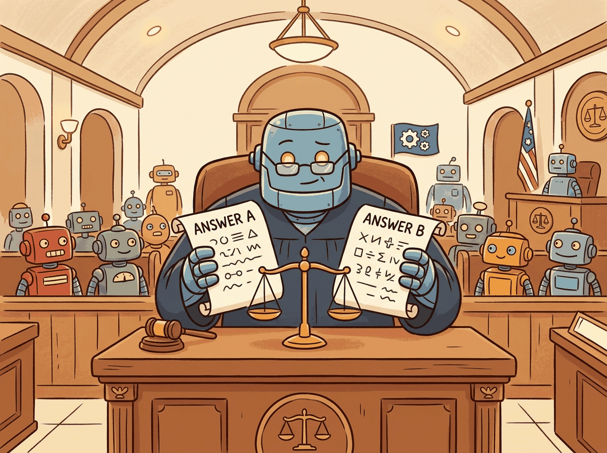

"When you use a language model to judge another language model, you inherit all the biases of both."
Eval, Bias-Inheriting AI Agent
LLM-as-Judge is the dominant paradigm for evaluating open-ended generation, but it carries systematic biases that must be understood and mitigated. Human evaluation is the gold standard for subjective quality assessment, but it is slow, expensive, and difficult to scale. LLM-as-Judge replaces (or augments) human evaluators with a strong language model that scores outputs according to specified criteria. This approach scales to thousands of evaluations per hour at a fraction of the cost of human panels. However, LLM judges exhibit well-documented biases: they prefer longer outputs, favor the first option in pairwise comparisons, show self-preference for their own outputs, and anchor on superficial markers of quality. This section covers the bias taxonomy, the major frameworks for LLM-based evaluation (G-Eval, Prometheus, JudgeLM, AlpacaEval, MT-Bench), debiasing techniques, and methods for meta-evaluating judge reliability. The evaluation metrics from Section 28.1 provide foundational context, while the arena methodology from Section 28.1 represents the gold-standard human evaluation baseline against which judge models are validated.
Prerequisites
Before starting, make sure you are familiar with evaluation fundamentals from Section 28.1: LLM Evaluation Fundamentals, arena-style evaluation from Section 28.1: Arena-Style and Crowdsourced Evaluation, and harness ecosystems from Section 28.1: Evaluation Harness Ecosystems.

28.8.1 Judge Bias Taxonomy
What it is: Use an LLM as judge for routine eval (cheap, scalable). Maintain a small (200-500 examples) human-judged calibration set. Periodically (weekly) run the LLM judge against the calibration set; report agreement rate (Cohen's kappa). When agreement drops below a threshold (e.g., kappa < 0.6), pause LLM-judged decisions until the judge model or prompt is recalibrated.
When not to use it: Domains where ground-truth is genuinely unavailable (creative writing, novel research). Without a calibration anchor, LLM judges drift unmonitored.
Before deploying any LLM-as-Judge system, you must understand its failure modes. Research has identified several systematic biases that affect judge reliability. These biases are not random noise; they are directional, meaning they consistently inflate or deflate scores for outputs with particular characteristics. A judge system that does not account for these biases will produce rankings that reflect the biases of the judge rather than the true quality of the evaluated outputs.
Five biases every LLM judge exhibits. (1) Position bias: in pairwise comparison, judges prefer whichever response appears first (or last, depending on the model). Swapping the order of responses can flip the verdict. (2) Verbosity/length bias: judges systematically prefer longer, more detailed responses even when the additional length adds no informational value. (3) Self-preference bias: a model used as a judge tends to rate its own outputs higher than outputs from other models. (4) Anchoring bias: when a reference answer or rubric example is provided, judges anchor to surface features of the reference rather than evaluating semantic correctness. (5) Style bias: judges reward responses that use confident, authoritative language, bullet points, and structured formatting, regardless of factual accuracy.
Position bias is the most extensively studied and the easiest to mitigate. The standard solution is to evaluate each pair twice with swapped order and check for consistency. Code Fragment 28.8.2 demonstrates how to detect and quantify position bias in a pairwise judge.
# Detecting and quantifying position bias in an LLM judge
from openai import OpenAI
import json
client = OpenAI()
JUDGE_MODEL = "gpt-4o"
def pairwise_judge(
question: str,
response_a: str,
response_b: str,
judge_model: str = JUDGE_MODEL,
) -> str:
"""Ask the judge to select the better response. Returns 'A' or 'B'."""
prompt = f"""You are an impartial judge. Given a question and two responses,
select which response is better. Output only 'A' or 'B'.
Question: {question}
Response A: {response_a}
Response B: {response_b}
Better response:"""
result = client.chat.completions.create(
model=judge_model,
messages=[{"role": "user", "content": prompt}],
max_tokens=1,
temperature=0.0,
)
return result.choices[0].message.content.strip()
def detect_position_bias(
question: str,
response_1: str,
response_2: str,
) -> dict:
"""Run pairwise comparison in both orders to detect position bias."""
# Order 1: response_1 as A, response_2 as B
verdict_1 = pairwise_judge(question, response_1, response_2)
# Order 2: response_2 as A, response_1 as B
verdict_2 = pairwise_judge(question, response_2, response_1)
# Check consistency: if the judge is unbiased, the verdicts should
# point to the same underlying response regardless of position
consistent = (
(verdict_1 == "A" and verdict_2 == "B") # Both prefer response_1
or (verdict_1 == "B" and verdict_2 == "A") # Both prefer response_2
)
return {
"order_1_verdict": verdict_1,
"order_2_verdict": verdict_2,
"consistent": consistent,
"position_bias_detected": not consistent,
}
# Run on a batch and compute position bias rate
bias_results = []
for sample in eval_samples:
result = detect_position_bias(sample["q"], sample["r1"], sample["r2"])
bias_results.append(result)
bias_rate = sum(1 for r in bias_results if r["position_bias_detected"]) / len(bias_results)
print(f"Position bias rate: {bias_rate:.1%}")
# Typical range for GPT-4: 10-25% of pairwise comparisons are inconsistentThe same result in 5 lines with DeepEval:
from deepeval.metrics import BiasMetric
from deepeval.test_case import LLMTestCase
test_case = LLMTestCase(input=question, actual_output=response_a)
metric = BiasMetric(threshold=0.5)
metric.measure(test_case)
print(f"Bias score: {metric.score}, Reason: {metric.reason}")In a well-known experiment, GPT-4 acting as a judge rated GPT-4's own outputs as the best response 67% of the time, compared to 50% when judging between two other models of equal quality. This "narcissism bias" is the AI equivalent of a professor grading their own textbook as the best one on the syllabus.
28.8.2 G-Eval: Chain-of-Thought Scoring
G-Eval, introduced by Liu et al. (2023), applies chain-of-thought (CoT) reasoning to NLG evaluation. Rather than asking a judge model to produce a single score, G-Eval prompts the model to first generate a detailed evaluation chain of thought, then produce a numeric score. The key innovation is using the token probabilities of the score tokens to compute a weighted score, which produces finer-grained and more stable evaluations than simply taking the argmax score. This probability-weighted approach reduces the discretization noise inherent in integer scoring scales.
G-Eval operates on four dimensions commonly used in NLG evaluation: coherence, consistency, fluency, and relevance. For each dimension, a task-specific prompt instructs the judge model to evaluate the output step by step. The prompt includes the evaluation criteria, a detailed description of what each score level means, and the source document and generated summary (or question and response for QA tasks). Code Fragment 28.8.6 implements the G-Eval scoring pipeline.
# G-Eval: chain-of-thought scoring with probability weighting
from openai import OpenAI
import numpy as np
client = OpenAI()
GEVAL_COHERENCE_PROMPT = """You will be given a summary of a news article.
Your task is to rate the summary on coherence (1-5).
Evaluation Criteria:
Coherence (1-5): The collective quality of all sentences. The summary
should be well-structured and well-organized. It should not just be
a heap of related information, but should build from sentence to
sentence to a coherent body of information about a topic.
Evaluation Steps:
1. Read the summary carefully.
2. Check if the sentences logically follow each other.
3. Check if there is a clear topic progression.
4. Check if the summary has a clear beginning, middle, and end.
5. Assign a score from 1 to 5.
Summary: {summary}
After providing your evaluation steps, output your score (1-5):"""
def geval_score(
summary: str,
prompt_template: str = GEVAL_COHERENCE_PROMPT,
model: str = "gpt-4o",
) -> dict:
"""Compute G-Eval score with probability weighting."""
prompt = prompt_template.format(summary=summary)
response = client.chat.completions.create(
model=model,
messages=[{"role": "user", "content": prompt}],
max_tokens=512,
temperature=0.0,
logprobs=True,
top_logprobs=5,
)
content = response.choices[0].message.content
logprobs = response.choices[0].logprobs
# Extract probability distribution over score tokens (1-5)
# from the last token's logprobs
score_probs = {}
if logprobs and logprobs.content:
last_token_logprobs = logprobs.content[-1].top_logprobs
for lp in last_token_logprobs:
if lp.token.strip() in ["1", "2", "3", "4", "5"]:
score_probs[int(lp.token.strip())] = np.exp(lp.logprob)
# Compute probability-weighted score
if score_probs:
total_prob = sum(score_probs.values())
weighted_score = sum(
score * (prob / total_prob)
for score, prob in score_probs.items()
)
else:
# Fallback: extract integer score from text
weighted_score = float(content.strip()[-1])
return {
"chain_of_thought": content,
"score_distribution": score_probs,
"weighted_score": round(weighted_score, 3),
}The same result in 5 lines with DeepEval, which implements G-Eval with built-in probability weighting:
from deepeval.metrics import GEval
from deepeval.test_case import LLMTestCase
coherence = GEval(name="Coherence", evaluation_steps=[
"Check if sentences logically follow each other",
"Check for clear topic progression",
], evaluation_params=["actual_output"])
test_case = LLMTestCase(input="Summarize the article.", actual_output=summary)
coherence.measure(test_case)
print(f"Score: {coherence.score}, Reason: {coherence.reason}")G-Eval requires logprobs access. The probability-weighted scoring that makes G-Eval effective depends on access to token-level log probabilities. As of 2025, the OpenAI API provides logprobs for GPT-4o and GPT-4o-mini. For models that do not expose logprobs (such as Claude), you can approximate G-Eval by running multiple evaluations with temperature > 0 and averaging the scores, though this is slower and less precise. Alternatively, use the open-source judge models discussed in the Prometheus section below, which provide full logprob access via local inference.
28.8.3 Prometheus and Prometheus 2: Open-Source Judge Models
Prometheus (Kim et al., 2023) and Prometheus 2 (Kim et al., 2024) are open-source language models specifically trained to serve as evaluation judges. Unlike using a general-purpose model like GPT-4 as a judge, Prometheus models are fine-tuned on rubric-based evaluation data where each training example includes a detailed scoring rubric, a model output, a reference answer, and a human-assigned score with justification. This training process produces judges that are better calibrated to evaluation rubrics and less susceptible to the stylistic biases that affect general-purpose judges.
Prometheus 2 extends the original with two evaluation modes: direct assessment (scoring a single output on a rubric) and pairwise ranking (selecting the better of two outputs). The model accepts a structured input containing the evaluation criteria, the rubric with score-level descriptions, and the output(s) to evaluate. It produces a chain-of-thought justification followed by a score or preference verdict. Code Fragment 28.8.3 shows how to use Prometheus 2 for rubric-based evaluation.
# Prometheus 2: rubric-based evaluation with an open-source judge
# Install: pip install transformers torch
from transformers import AutoModelForCausalLM, AutoTokenizer
import torch
model_name = "prometheus-eval/prometheus-7b-v2.0"
tokenizer = AutoTokenizer.from_pretrained(model_name)
model = AutoModelForCausalLM.from_pretrained(
model_name,
torch_dtype=torch.bfloat16,
device_map="auto",
)
DIRECT_ASSESSMENT_TEMPLATE = """###Task Description:
An instruction (might include an Input inside it), a response to evaluate,
a reference answer that gets a score of 5, and a score rubric representing
the evaluation criteria are given.
1. Write a detailed feedback that assesses the quality of the response
strictly based on the given score rubric.
2. After writing the feedback, write a score that is an integer between
1 and 5. Refer to the score rubric.
###Instruction:
{instruction}
###Response to evaluate:
{response}
###Reference Answer (Score 5):
{reference}
###Score Rubric:
[{criteria}]
Score 1: {score_1_desc}
Score 2: {score_2_desc}
Score 3: {score_3_desc}
Score 4: {score_4_desc}
Score 5: {score_5_desc}
###Feedback:"""
def prometheus_evaluate(
instruction: str,
response: str,
reference: str,
criteria: str,
rubric: dict,
) -> dict:
"""Run Prometheus 2 direct assessment."""
prompt = DIRECT_ASSESSMENT_TEMPLATE.format(
instruction=instruction,
response=response,
reference=reference,
criteria=criteria,
score_1_desc=rubric[1],
score_2_desc=rubric[2],
score_3_desc=rubric[3],
score_4_desc=rubric[4],
score_5_desc=rubric[5],
)
inputs = tokenizer(prompt, return_tensors="pt").to(model.device)
with torch.no_grad():
outputs = model.generate(
**inputs,
max_new_tokens=512,
temperature=0.0,
do_sample=False,
)
generated = tokenizer.decode(outputs[0][inputs.input_ids.shape[1]:], skip_special_tokens=True)
# Parse feedback and score from generated text
feedback = generated.strip()
score = None
for line in reversed(feedback.split("\n")):
line = line.strip()
if line and line[0].isdigit():
score = int(line[0])
break
return {"feedback": feedback, "score": score}The primary advantage of Prometheus over general-purpose judge models is rubric adherence. When given a detailed scoring rubric, Prometheus produces scores that correlate more strongly with human judgments than GPT-4 on rubric-based evaluation tasks. The model is also fully open-source (Apache 2.0), enabling local deployment without API costs or data privacy concerns. For organizations evaluating sensitive content that cannot be sent to external APIs, Prometheus provides a viable alternative to proprietary judges.
28.8.4 JudgeLM: Fine-Tuned Evaluation at Scale
JudgeLM (Zhu et al., 2023) takes a different approach to building judge models. Rather than training on rubric-based evaluation data, JudgeLM is fine-tuned on large-scale pairwise comparison data generated by GPT-4. The training data consists of question-response pairs where GPT-4 has provided a preference judgment with detailed justification. By distilling GPT-4's evaluation capabilities into a smaller model, JudgeLM achieves judge performance comparable to GPT-4 at substantially lower inference cost.
The JudgeLM training pipeline introduces several techniques to improve judge quality. Swap augmentation doubles the training data by including each comparison in both orders, which directly targets position bias. Reference-guided judging provides the ground-truth answer as additional context, improving accuracy on factual evaluation tasks. Multi-dimensional scoring evaluates responses on multiple criteria simultaneously rather than producing a single holistic score. These techniques are transferable: you can apply swap augmentation and reference-guided judging to any LLM judge, even without fine-tuning.
Distilled judges inherit the biases of their teacher. Because JudgeLM (and similar distilled judges) are trained on GPT-4's judgments, they inherit whatever biases GPT-4 exhibits. If GPT-4 has a verbosity preference, the distilled judge will also prefer verbose responses. This creates a risk of bias amplification: the distilled judge may actually exaggerate the teacher's biases because the training process optimizes for agreement with the teacher rather than agreement with humans. Always validate distilled judges against a human evaluation panel on your specific use case before deploying them in production. The meta-evaluation methods in Section 7 below provide a framework for this validation.
28.8.5 AlpacaEval and Length-Controlled Debiasing
AlpacaEval (Li et al., 2023) is an automated evaluation framework that uses an LLM judge to compare model outputs against a reference model (typically GPT-4 Turbo) on a curated set of 805 instructions. The standard AlpacaEval metric is the win rate: the percentage of instructions where the judge prefers the evaluated model's output over the reference. While straightforward, the original AlpacaEval metric was heavily influenced by length bias, as models that produced longer outputs consistently achieved higher win rates regardless of actual quality improvements.
AlpacaEval 2 introduced length-controlled (LC) win rates to address this problem. The LC win rate uses a logistic regression model to estimate the expected win rate at a controlled output length, effectively removing the contribution of length to the overall score. This debiasing technique revealed that several models that appeared to outperform GPT-4 on the original AlpacaEval were simply producing longer outputs. Code Fragment 28.8.6 demonstrates how length-controlled debiasing works.
# AlpacaEval length-controlled win rate debiasing
# Install: pip install alpaca-eval
import numpy as np
from sklearn.linear_model import LogisticRegression
def compute_length_controlled_winrate(
wins: list[bool],
model_lengths: list[int],
reference_lengths: list[int],
) -> dict:
"""Compute length-controlled win rate using logistic regression.
The idea: fit a model that predicts win/loss from length difference,
then compute the expected win rate at zero length difference.
"""
# Feature: log ratio of model length to reference length
length_ratios = np.array([
np.log(ml / rl) for ml, rl in zip(model_lengths, reference_lengths)
]).reshape(-1, 1)
wins_array = np.array(wins, dtype=int)
# Raw win rate (length-biased)
raw_winrate = wins_array.mean()
# Fit logistic regression: P(win) = sigmoid(a * log_length_ratio + b)
clf = LogisticRegression(fit_intercept=True)
clf.fit(length_ratios, wins_array)
# Length-controlled win rate: predict at zero length difference
lc_winrate = clf.predict_proba(np.array([[0.0]]))[0][1]
# Length coefficient: positive means length bias exists
length_coefficient = clf.coef_[0][0]
return {
"raw_winrate": round(raw_winrate, 4),
"lc_winrate": round(lc_winrate, 4),
"length_coefficient": round(length_coefficient, 4),
"length_bias_detected": length_coefficient > 0.1,
"debiasing_effect": round(raw_winrate - lc_winrate, 4),
}
# Example: a model with high raw win rate but large length bias
# results = compute_length_controlled_winrate(
# wins=[True]*70 + [False]*30,
# model_lengths=[500]*70 + [200]*30, # Wins are mostly on longer outputs
# reference_lengths=[300]*100,
# )
# raw_winrate: 0.70, lc_winrate: 0.55, debiasing_effect: 0.1528.8.6 MT-Bench and the Pairwise Comparison Paradigm
MT-Bench (Zheng et al., 2023) is a multi-turn benchmark consisting of 80 carefully curated questions spanning eight categories: writing, roleplay, extraction, reasoning, math, coding, knowledge, and STEM. Each question involves a two-turn conversation, testing the model's ability to engage in coherent multi-turn dialogue. An LLM judge (typically GPT-4) evaluates responses on a scale of 1 to 10. MT-Bench introduced the LLM-as-Judge paradigm to the broader community and remains one of the most cited evaluation frameworks for chatbot quality.
The pairwise comparison variant of MT-Bench asks the judge to compare two model responses directly rather than scoring each independently. This paradigm, extended to large scale in the Chatbot Arena (Section 28.1), has become the dominant approach for ranking chatbot quality. Pairwise comparison reduces the difficulty of the judge's task (relative comparison is easier than absolute scoring) and produces more consistent rankings. However, it requires $O(n^2)$ comparisons to rank $n$ models, making it expensive for large model sets without sampling strategies such as the Swiss tournament system used in Chatbot Arena.
Combine pointwise and pairwise evaluation strategically. Pointwise scoring (G-Eval style) is efficient for screening large numbers of outputs and identifying clear failures. Pairwise comparison (MT-Bench style) is more reliable for fine-grained ranking of similarly performing models. A practical workflow uses pointwise scoring as a first pass to filter out clearly poor outputs, then applies pairwise comparison only to the remaining candidates. This reduces the total number of judge calls while maintaining ranking quality. The evaluation harnesses from Section 28.1 can orchestrate both modes in a single evaluation pipeline.
28.8.7 Meta-Evaluation: Measuring Judge Reliability
If you are using an LLM as a judge, you need to evaluate the judge itself. Meta-evaluation measures how well the judge's assessments agree with human judgments, how stable those assessments are under perturbation, and how often the judge produces contradictory rankings. Without meta-evaluation, you cannot distinguish between a high-quality judge and one that happens to agree with your expectations on a small sample.
Three meta-evaluation metrics are essential. First, inter-annotator agreement: compare the judge's scores with human annotations using Cohen's kappa or Kendall's tau. Second, consistency under perturbation: measure how often the judge's verdict changes when you swap response order, rephrase the evaluation prompt, or alter the scoring rubric's wording. Third, rank inversion rate: for a set of models with known quality ordering (established by human evaluation), measure how often the judge ranks a weaker model above a stronger one. Code Fragment 28.8.3 implements these meta-evaluation metrics.
# Meta-evaluation: measuring LLM judge reliability
import numpy as np
from scipy.stats import kendalltau
from sklearn.metrics import cohen_kappa_score
def meta_evaluate_judge(
judge_scores: list[int],
human_scores: list[int],
judge_scores_swapped: list[int], # Scores with response order swapped
) -> dict:
"""Comprehensive meta-evaluation of an LLM judge."""
# 1. Inter-annotator agreement with humans
kappa = cohen_kappa_score(judge_scores, human_scores)
tau, tau_pvalue = kendalltau(judge_scores, human_scores)
# 2. Consistency under order swap
# For pairwise judges: how often does the verdict flip when order changes?
n_samples = len(judge_scores)
consistency_count = sum(
1 for j, js in zip(judge_scores, judge_scores_swapped)
if j == js # Same absolute score regardless of presentation order
)
swap_consistency = consistency_count / n_samples
# 3. Rank inversion rate
# Count pairs where judge ranking contradicts human ranking
inversions = 0
total_pairs = 0
for i in range(n_samples):
for j in range(i + 1, n_samples):
if human_scores[i] != human_scores[j]:
total_pairs += 1
human_order = human_scores[i] > human_scores[j]
judge_order = judge_scores[i] > judge_scores[j]
if human_order != judge_order:
inversions += 1
inversion_rate = inversions / total_pairs if total_pairs > 0 else 0.0
return {
"cohens_kappa": round(kappa, 3),
"kendalls_tau": round(tau, 3),
"tau_pvalue": round(tau_pvalue, 4),
"swap_consistency": round(swap_consistency, 3),
"rank_inversion_rate": round(inversion_rate, 3),
"reliability_grade": (
"high" if kappa > 0.6 and swap_consistency > 0.85 else
"moderate" if kappa > 0.4 and swap_consistency > 0.70 else
"low"
),
}Lab: Multi-Judge Comparison
This lab compares evaluation results from three different judge configurations: a GPT-4o judge, a Prometheus-2 open-source judge, and a human evaluation panel. The goal is to quantify inter-judge agreement and identify systematic divergence patterns. This exercise reinforces the principle that no single judge should be trusted in isolation; instead, cross-validation across multiple judges (including at least a sample of human evaluations) provides the most reliable quality signal.
# Lab: Multi-judge comparison pipeline
import json
from pathlib import Path
def run_multi_judge_comparison(
eval_samples: list[dict],
output_dir: str = "./judge_comparison",
) -> dict:
"""Score outputs with multiple judges and compare results."""
output_path = Path(output_dir)
output_path.mkdir(exist_ok=True)
all_results = {"gpt4o": [], "prometheus": [], "human": []}
for sample in eval_samples:
instruction = sample["instruction"]
response = sample["response"]
reference = sample.get("reference", "")
# Judge 1: GPT-4o with G-Eval
gpt4_result = geval_score(response) # From Section 2 above
all_results["gpt4o"].append(gpt4_result["weighted_score"])
# Judge 2: Prometheus 2 with rubric
prom_result = prometheus_evaluate(
instruction=instruction,
response=response,
reference=reference,
criteria="Overall quality and helpfulness",
rubric={
1: "Completely unhelpful or incorrect",
2: "Mostly unhelpful with significant errors",
3: "Partially helpful but with notable issues",
4: "Helpful and mostly correct with minor issues",
5: "Excellent, comprehensive, and fully correct",
},
)
all_results["prometheus"].append(prom_result["score"])
# Judge 3: Human scores (loaded from annotation file)
all_results["human"].append(sample.get("human_score", 3))
# Cross-judge agreement analysis
agreement = {
"gpt4o_vs_human": meta_evaluate_judge(
all_results["gpt4o"],
all_results["human"],
all_results["gpt4o"], # Simplified; use swapped scores in practice
),
"prometheus_vs_human": meta_evaluate_judge(
all_results["prometheus"],
all_results["human"],
all_results["prometheus"],
),
"gpt4o_vs_prometheus": meta_evaluate_judge(
all_results["gpt4o"],
all_results["prometheus"],
all_results["gpt4o"],
),
}
# Save results
with open(output_path / "judge_comparison.json", "w") as f:
json.dump(agreement, f, indent=2)
return agreementThe 10% human calibration rule. A practical guideline for production LLM-as-Judge deployments: always collect human evaluations on at least 10% of your evaluation set. Use this human-annotated subset to compute inter-annotator agreement (Cohen's kappa) between your LLM judge and humans. If kappa drops below 0.4 (fair agreement), your judge is unreliable for this task and needs recalibration. Recalibration options include: revising the evaluation prompt, switching to a different judge model, adding reference answers, or switching from pointwise to pairwise evaluation. The testing infrastructure from Section 28.3 can automate this calibration check as part of your CI/CD pipeline.
Exercises
LLM judges have well-documented biases. (a) Name four distinct biases (beyond just "they prefer responses from their own model family"). (b) For each, describe one specific scenario where it produces wrong rankings. (c) Why is "use a stronger judge model" not a sufficient remedy?
Answer Sketch
(a) Common biases: (i) position bias (prefers the first response shown), (ii) length bias (prefers longer answers), (iii) verbosity-disguised-as-thoroughness (prefers answers with markdown bullets and headers), (iv) self-preference (rates outputs from the same model family higher). (b) Examples: position bias means swapping order changes the winner; length bias rewards padded waffle; markdown bias favors mediocre bulleted answers over crisper prose; self-preference inflates GPT-4 vs GPT-4 comparisons. (c) Stronger judges still exhibit these biases (often more subtly). The fix is methodological: run pairwise judgments in both orders and average; control for length explicitly; use rubric-based scoring (Prometheus, G-Eval) rather than raw "which is better"; calibrate against human ratings on a held-out set.
You add length-controlled debiasing (AlpacaEval style) to your pairwise eval. Predict: (a) how the win rate of a verbose model changes; (b) how the win rate of a terse model changes; (c) which class of tasks barely moves under this correction.
Answer Sketch
(a) Verbose models drop substantially: a model that was winning 65% by emitting 2x more tokens may fall to 50-55% once the length advantage is regressed out. (b) Terse models gain proportionally; this is roughly a zero-sum redistribution. (c) Tasks where the correct answer has a fixed length (math, classification, factual QA) barely move under length correction because length variance was small to begin with. Tasks like creative writing, where long-vs-short is itself a quality judgment by humans, can swing wildly. The general lesson: length correction is a useful debiasing for "advice" or "explanation" tasks; it's the wrong intervention for tasks where length carries genuine signal.
Sketch an 8-line function that scores model A vs model B on a query by running the judge twice (A first, then B first) and only counting the result if both runs agree. State the cost and benefit of this protocol.
Answer Sketch
def fair_pairwise(query, ans_a, ans_b, judge):
v1 = judge(prompt(query, ans_a, ans_b)) # A first
v2 = judge(prompt(query, ans_b, ans_a)) # B first
if v1 == "first" and v2 == "second": return "A"
if v1 == "second" and v2 == "first": return "B"
return "tie" # disagreement = position-bias signalCost: 2x judge calls per pairing. Benefit: position bias is fully removed, and the disagreement rate becomes an interpretable diagnostic (high disagreement = noisy or biased judge). The fraction of "ties" produced this way also gives you an honest measure of how truly indistinguishable the models are; if 40% of comparisons are ties, your downstream metric needs error bars wide enough to reflect that.
Your team uses an LLM judge to track quality across releases. After model upgrade R5, the judge reports a 12-point quality jump. Customer feedback shows no improvement. List three plausible explanations and how to test each.
Answer Sketch
(1) Style drift, not capability gain: R5 produces more confident-sounding, more structured outputs that judges reward independent of correctness. Test: run a small human eval on the same items and compare to the judge's verdict. (2) Eval contamination: the eval set was inadvertently included in R5's fine-tuning data; the model has seen the answers. Test: hash and search eval items in the training corpus, or build a fresh eval from new sources. (3) Judge-model bias toward R5's style: R5 and the judge share training data or post-training style; self-preference inflates scores. Test: run the same comparison with a structurally different judge (different family, different size) and check whether the gap holds. The 3-test diagnostic kit is essential before any release decision based on automated eval.
Open problems in LLM-as-Judge research. Several fundamental challenges remain unsolved. (1) Circular evaluation: when LLMs judge LLMs, it is unclear whether the evaluation measures true quality or agreement with the judge model's own preferences. Establishing ground truth independent of any LLM is increasingly difficult as tasks become more open-ended. (2) Domain-specific judges: general-purpose judges perform poorly on specialized domains (medical, legal, scientific).
Training domain-specific judge models requires expensive expert annotation. (3) Multimodal judging: as LLMs become multimodal (Chapter 26), evaluation must extend to image, audio, and video outputs where quality criteria are even less standardized. (4) Reward hacking by evaluated models: if models are optimized against LLM judge feedback (as in RLHF), they may learn to exploit judge biases rather than genuinely improving quality. (5) Constitutional judges: training judges on explicit principles rather than examples, building on the constitutional AI approach from Section 17.1, is a promising but underexplored direction.
Bibliography and Further Reading
Zheng, L., Chiang, W.L., Sheng, Y., et al. (2023). "Judging LLM-as-a-Judge with MT-Bench and Chatbot Arena." arXiv:2306.05685
Liu, Y., Iter, D., Xu, Y., et al. (2023). "G-Eval: NLG Evaluation using GPT-4 with Better Human Alignment." EMNLP 2023. arXiv:2303.16634
Kim, S., Shin, J., Cho, Y., et al. (2023). "Prometheus: Inducing Fine-Grained Evaluation Capability in Language Models." arXiv:2310.08491
Kim, S., Suk, J., Longpre, S., et al. (2024). "Prometheus 2: An Open Source Language Model Specialized in Evaluating Other Language Models." arXiv:2405.01535
Zhu, L., Wang, X., Wang, X. (2023). "JudgeLM: Fine-tuned Large Language Models are Scalable Judges." arXiv:2310.17631
Li, X., Zhang, T., Dubois, Y., et al. (2024). "AlpacaEval 2: Length-Controlled Automatic Evaluation of LLM-based Chatbots." arXiv:2404.04475
Wang, P., Li, L., Chen, L., et al. (2024). "Large Language Models are not Fair Evaluators." arXiv:2305.17926
Stureborg, R., Alikaniotis, D., Suhara, Y. (2024). "Large Language Models are Inconsistent and Biased Evaluators." arXiv:2405.01724
1. Name three systematic biases that affect LLM-as-judge evaluations. For each, describe one mitigation technique.
Show Answer
2. How does G-Eval use chain-of-thought reasoning to improve scoring granularity compared to direct "rate this on a 1 to 5 scale" prompts?
Show Answer
3. What is the advantage of using an open-source judge model like Prometheus 2 over a proprietary model like GPT-4 for evaluation? What is the trade-off?
Show Answer
4. AlpacaEval introduced length-controlled debiasing. Why does response length bias matter, and how does the correction work?
Show Answer
- LLM-as-judge evaluations suffer from systematic biases including position bias, length bias, self-enhancement bias, and authority bias.
- G-Eval uses chain-of-thought reasoning and probability-weighted scoring to produce finer-grained and more stable evaluations than direct scoring.
- Prometheus 2 is an open-source judge model that can operate in both direct scoring and pairwise comparison modes, reducing dependence on proprietary judge models.
- AlpacaEval 2 introduced length-controlled win rates that remove the contribution of verbosity to evaluation scores.
- MT-Bench uses multi-turn conversations to evaluate instruction-following quality, catching degradation that single-turn benchmarks miss.
- Debiasing techniques (swapping answer positions, controlling for length, using multiple judge models) are essential for reliable LLM-as-judge evaluations.
What Comes Next
In this section we covered judge bias taxonomy, g-eval: chain-of-thought scoring, and related topics. In Section 28.9: Long-Context Benchmarks and Context Extension Methods, we continue starting with the gap between claimed and effective context length.